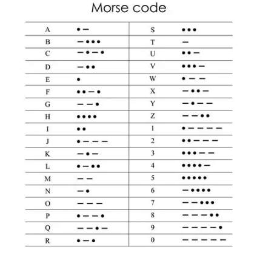

Main sites
UTC +5CST
Netfinder.radio
OMISS net
QRZ.com
Eham.net
LOTW.arrl.org
DXlook.com
Fists.co.uk
Radioqth.net/vanity/
CW Morse
cw resources
cwdemo.md
15 wpm
morsecode channel
Farnsworth 25 wpm
radioreference.com
hamradioforum.com
1. Shortwave - 3 MHz - 30 MHz (wavelength 100m - 10m)
2. Medium Wave - 300 KHz - 3 MHz (wavelength 1km - 100m) AM (530 KHz-1.6 MHz
3. Long Wave - 30 KHz - 300 KHz (wavelength 10 km - 1 km)
| BAND λ | Frequency | Freq.Range | CW Digital MHz | SSB |
|---|---|---|---|---|
| 180 m | .9 MHz | .530 - 1.700 MHz | AM broadcast | Medium Wave |
| 160 m | 1.8 MHz | 1.800 - 2.000 MHz | 1.800 - 2.000 | Medium Wave |
| 80 m | 3.5 MHz | 3.500 - 4.000 MHz | 3.500 - 3.600 | ------------- |
| 40 m | 7.0 MHz | 7.000 - 7.300 MHz | 7.000 - 7.125 | 7.125 - 7.300 |
| 31 m | 9.5 MHz | 9.400 - 9.900 MHz | Shortwave | World Band |
| 30 m | 10.0 MHz | 10.100 - 10.150 MHz | CW/Digital Only | ------------- |
| 20 m | 14.0 MHz | 14.000 - 14.350 MHz | 14.000 - 14.150 | ------------- |
| 17 m | 18.0 MHz | 18.068 - 18.168 MHz | WARC Band | ------------- |
| 15 m | 21.0 MHz | 21.000 - 21.450 MHz | 21.000 - 21.200 | ------------- |
| 12 m | 24.0 MHz | 24.890 - 24.990 MHz | WARC Band | ------------- |
| 10 m | 28.0 MHz | 28.000 - 29.700 MHz | --------------- | ------------- |
| 6 m | 50.0 MHz | 50.000 - 50.100 MHz | --------------- | ------------- |
| 3 m | 88.0 MHz | 88.000 - 108.000 MHz | FM broadcast | ------------- |

morse code